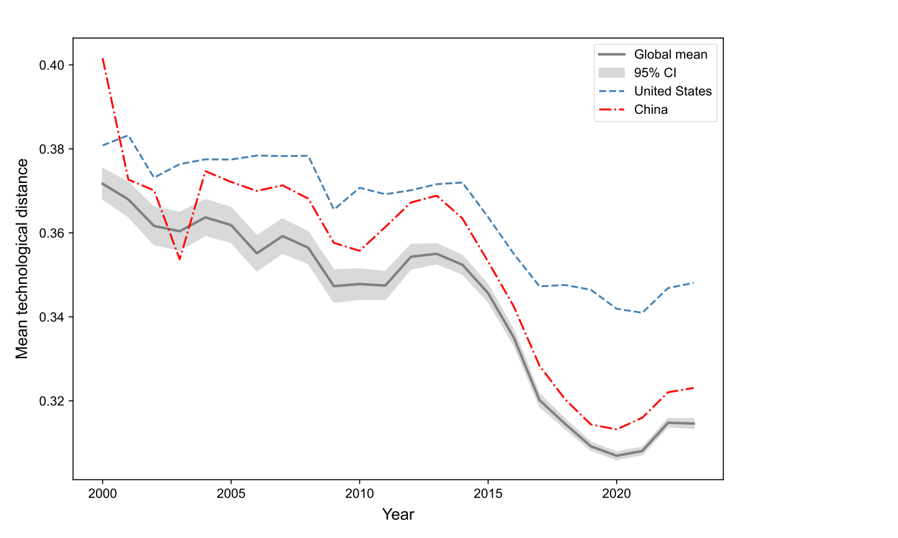

Research / Knowledge spaces and innovation measurement
Generative AI innovation
Technological exploration distance, revealed comparative advantage, and the U.S.-China dual-core reconfiguration of generative AI innovation
How do national innovation systems explore a shared technological space? This study combines patent-text embeddings, country-CPC-year revealed comparative advantage and inventor networks to examine U.S. and Chinese positions in generative AI innovation.
Repository · Aggregate data · Analysis and figure code · Download release
The manuscript is under revision. The recovered data do not establish an inverted U that is robust to observation weighting and genuine fixed effects. The public materials expose this specification dependence rather than treating the historical estimates as replicated.

Regression re-estimates
| Specification | Observations | Distance | Second moment |
|---|---|---|---|
| Equal-weight country-CPC-year cells, FE | 78,615 | 0.0465 | -0.0406 |
| Patent-CPC rows, FE | 506,311 | -0.0322 | 0.0204 |
| Recovered pooled OLS | 510,673 | 0.1117 | -0.1068 |
The cell distance terms meet the 5 per cent threshold; the row-level fixed-effects terms do not. Mean squared distance is not the square of mean distance. Coefficient signs alone therefore do not establish an interior turning point. The repository includes standard errors, p-values, covariance matrices, sample metadata and independent coefficient checks.
What the released tables measure
Table 3 reports archived application-count shares among the United States, China, Korea and the European Union. Its residual category denotes Korea plus the European Union, not every other country.
Table 4 reports U.S. and Chinese keyword-occurrence shares in concatenated text fields, not shares of distinct patents. Repeated mentions can contribute multiple counts. Its archived population is not explicitly restricted to GenAI or RCA above one. These values describe textual emphasis, not technological ownership or market control.
Data availability
Aggregate tables, regression outputs, non-identifying plot series, vector figures, analysis and restoration code, and provenance are available in the public repository. A no-plot verification script checks table arithmetic and file hashes.
Row-level patent-provider inputs, full notebook outputs, personal records and patent-level embedding coordinates are not publicly redistributed while provider rights remain unconfirmed. Full regeneration requires access to the source inputs under the providers' terms. Historical code retains its original workspace assumptions; the public release is not a complete, one-command replication package.
Reproducibility boundaries
- The recovered OLS implementation did not actually absorb fixed effects; genuine FE estimates were checked with two independent implementations.
- Archived table cluster labels are not a validated crosswalk to regenerated embedding clusters.
- Figures 5 and 6 retain recovered pooled illustrations, not new fixed-effects predictions.
- The historical event-study reference-year implementation has not been revalidated.